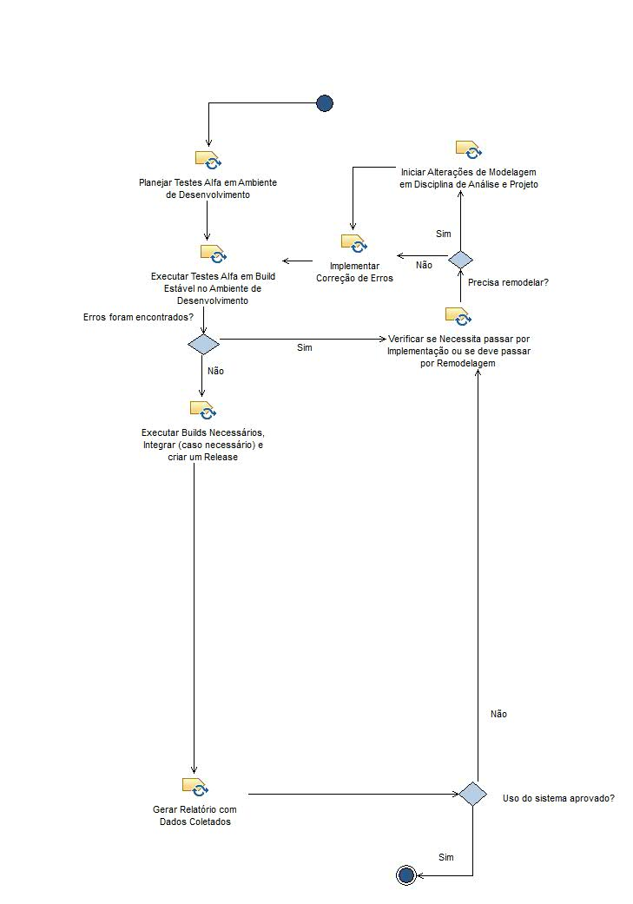
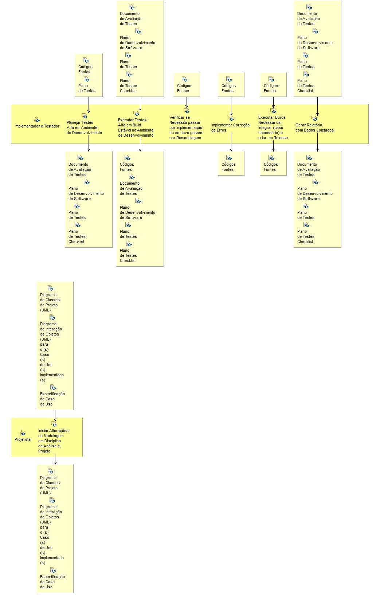

Activity: Implementação e Testes Validação
Nesta fase, o foco principal da disciplina de Implementação é realizar os testes do produto em preparação para release, bem como ajustes pequenos com base no feedback do cliente.
Description
Work Breakdown Structure
Team Allocation
Work Product Usage
Workflow


Work Breakdown